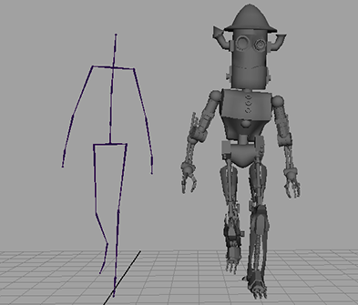
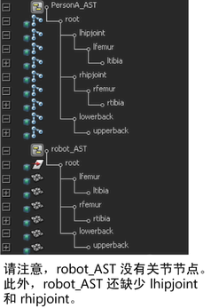
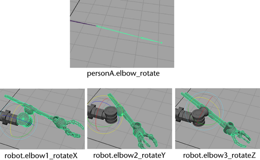
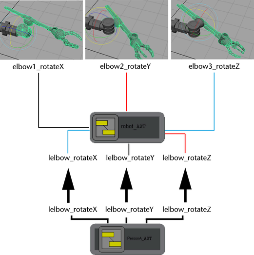
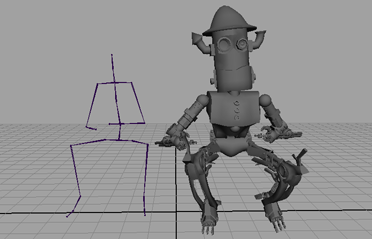

使用资产，还可以在由不同组件类型和不同配置组成的模型之间传递属性。在下面的示例中，骨架的步行循环传递到了不含关节的机器人模型中。
骨架和机器人的组件分别位于各自的资产中。

但是，机器人的枢轴点与骨架的关节并不是完全匹配。例如，机器人肘部由三个部分组成，而其中每一部分都仅可向一个方向旋转。骨架的肘部是可向三个方向旋转的单一关节。

若要确保机器人正确地模仿骨架，必须将每个独立的肘部旋转都作为资产肘部旋转的一个轴进行发布。
但是，仅轴对轴地发布旋转也无法获得理想的效果。这是因为每个肘部部位的轴与骨架肘部关节相应的轴不一致。
例如，机器人肘部的 Y 轴实际映射到骨架肘部的 X 轴。
若要解决此问题，必须在发布时对属性进行重命名。通过将骨架肘部的 rotateX 作为机器人资产的 rotateY 发布，可以确保机器人肘部的移动与骨架肘部的移动相匹配。
将三个肘部部位作为单个肘部进行发布
- 在“大纲视图”(Outliner)中，选择机器人左侧的 elbow1 节点。
- 在“通道盒”(Channel Box)中选择 elbow1 的 rotateX 属性。
- 选择“资产 > 发布属性”(Assets > Publish Attributes) >
 ，以设置
发布属性选项(Publish Attribute Options)
。
，以设置
发布属性选项(Publish Attribute Options)
。 - 将“发布”(Publish)设置为“选定通道盒属性”(Selected channel box attributes)。
- 将“属性名称”(Attribute name)设置为“自定义名称”(Custom name)。
- 将“自定义字符串”(Custom string)设置为 lelbow.rotateY。
重复上述步骤，将 elbow2 的 rotateY 映射到资产的 rotateZ，并将 elbow3 的 rotateZ 映射到资产的 rotateX。

发布这些属性后，即可将值从骨架资产传递到机器人资产。
将步行循环传递到另一个角色
- 在“大纲视图”(Outliner)中，选择 PersonA_AST。
- 按住 Shift 键并在 robot_AST 上单击鼠标左键。
- 选择“编辑 > 传递属性值”(Edit > Transfer Attribute Values) >
，以设置
传递属性值选项(Transfer Attribute Values Options)
。
- 启用“值”(Values)。
- 将“输入连接”(In connections)设置为“与源共享”(Share with source)。
- 单击“应用并关闭”(Apply and Close)。
为了与 Person A 相匹配，机器人会更改位置。
- 播放动画以查看 Person A 的步行循环是否已复制到机器人。
之所以能够将步行循环从骨架复制到机器人，是因为在资产级别上这两个对象的显示相同，而不用考虑二者的内部组件。
